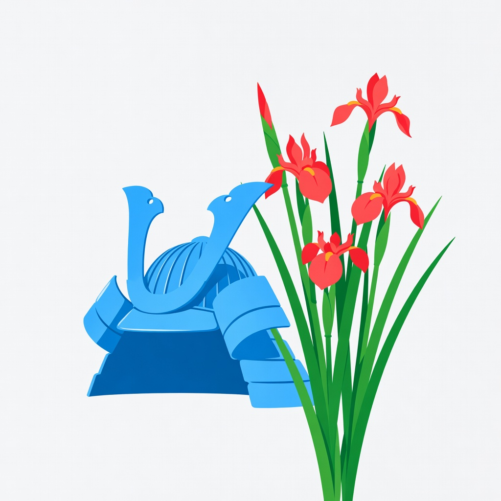

Armour
Kabuto & Gogatsu-ningyo
Families display a kabuto helmet and a May doll of a young warrior — not for war, but for the wish that a child meet difficulty the way armour meets a blow: whole, and standing.